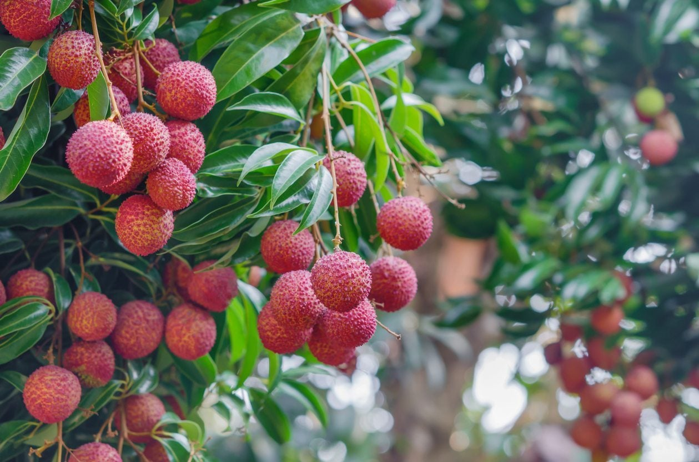
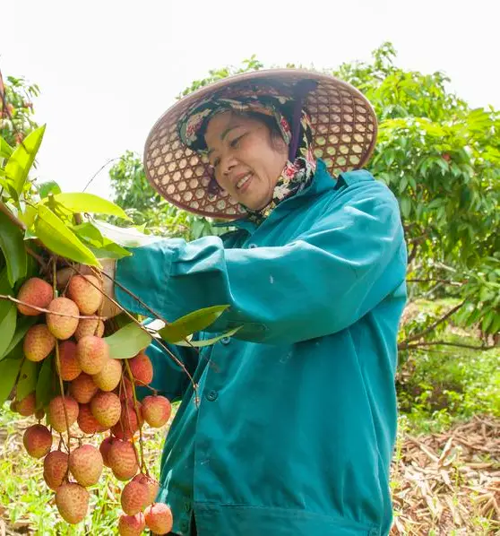
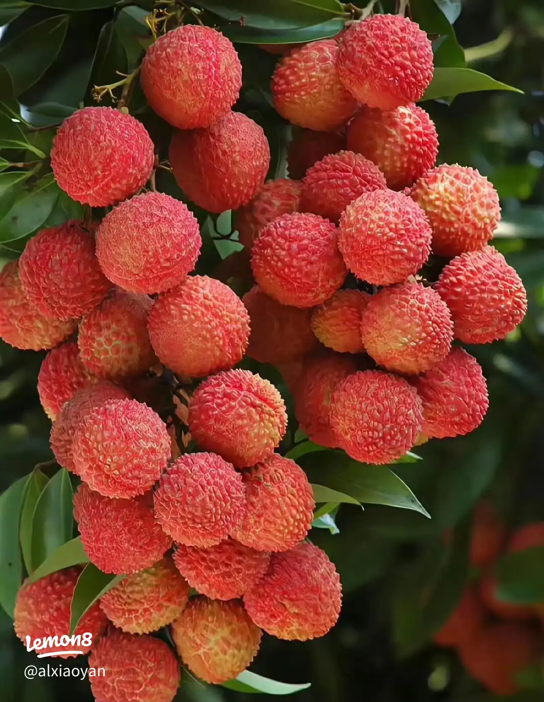
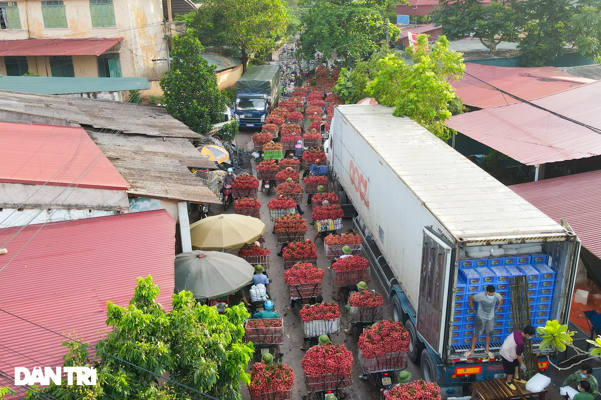
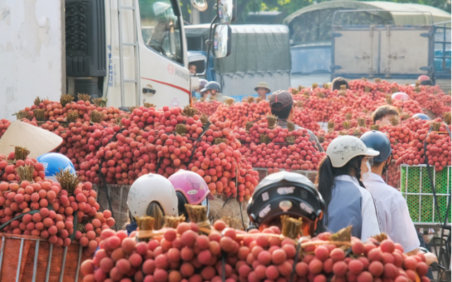
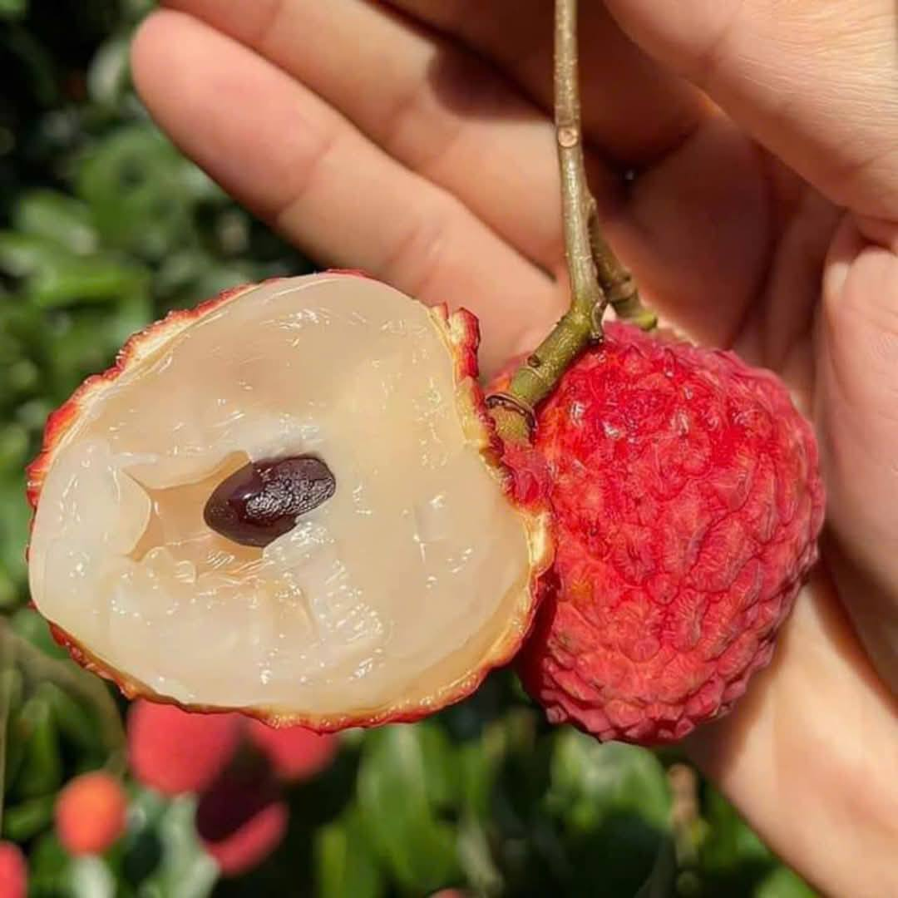
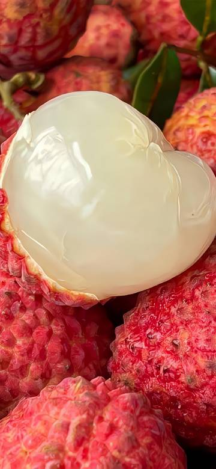

中国の玄宗皇帝の寵姫楊貴妃(ようきひ) が「嶺南(南嶺山脈の南)
まで早馬を走らせてまで取り寄せた」と言われる果物の宝石“ライチ”
栄養価が高く、疲労回復や美容にも効果があるといわれています。





楊貴妃が愛したフレッシュ・ライチを是非お試しください。

2025年の出荷が始まりました!
宝山遼墓の壁画「楊貴妃教鹉頌経図」
中国史におけるもっとも著名な女性であり、数多くの
伝承が伝えられている。
非常に有名なエピソードとして、楊貴妃が日持ちの効
かないレイシ(ライチ、荔枝)を大変に好み、産地の
嶺南から都長安まで早馬で運ばせたことが伝えられて
いる「”。このエピソードは後述の通り、後世にも大き
な影響を与えた。
出典: Wikipedia 楊貴妃ーエピソード
https://ja.m.wikipedia.org/wiki/%E6%A5%
8A%E8%B
2%B4%E5%A6%83
ライチ
(荔枝LYCHEE/LITCHI)
【品種紹介】
◆品種名:VAITHIEUバイチエウ
粒が大きく1KG当30~35粒程度
皮が向きやすく、身がはじけるような弾力
が特徴
収穫時期は、5月中旬から6月中旬
◆產地
ベトナム北東部
ハイズン省(HAIDUONG)
◆栄養素ビタミンCやカリウム、葉酸が多 く含まれ、楊貴妃の美貌を支えたとも言 われています。コラーゲンの生成にも欠か せない栄養素の銅も豊富に含まれて います。
ライチの食べ方


皮を剥いてお召し上がりくだ
さい。
実の中に種(たね)がありま
す。種は食べずに捨ててくだ
さい。
※1日10粒程度を目安にお召 し上がりください。空腹時は お避け下さい。食べ過ぎにご 注意ください。